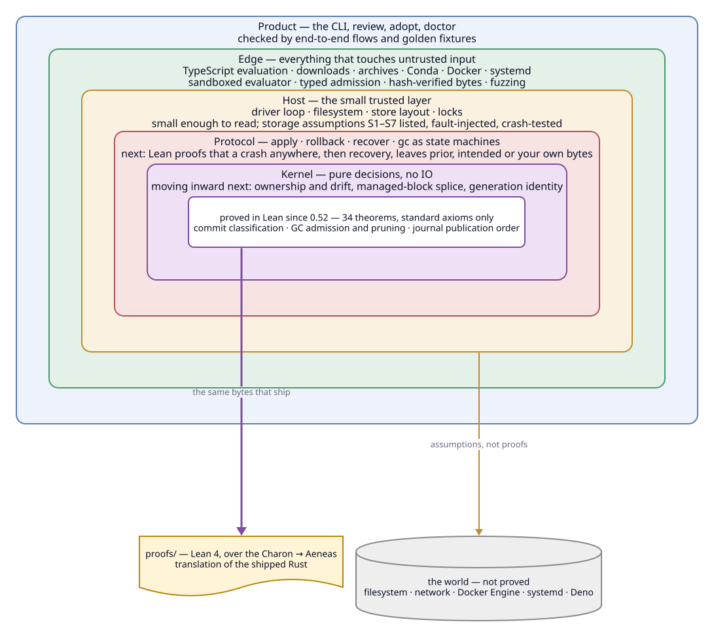

Packages
Pin a release archive, solve a coherent Conda environment or import a Pixi lock. Nothing installs into a global prefix; the lockfile is the only source of versions.
Packages · dotfiles · environments · services · tasks
Describe the tools and configuration you rely on in one typed TypeScript file. grip shows you the exact changes, applies them as a transaction, keeps every state it ever applied, and rolls back in one command. The decisions that make that safe are being proved, not just tested.
Linux x86_64 & WSL2 Alpha MIT v0.52.0
01 / How it works
Setting up a machine is usually a pile of commands nobody can replay. Gripsack turns it into a file you can read, review and roll back.
Write gripsack.ts: packages from release archives or Conda, dotfiles with explicit ownership, environments, Docker services, tasks.
Evaluation runs in a sandbox with no network and no environment. You see every file that would change and every source you are about to trust.
grip planOne transaction: prior state is journaled before any write, each destination is re-checked for your own edits, then one atomic rename makes the new generation current.
grip applyEvery applied state is a retained generation. Rollback reselects one: retained bytes, nothing rebuilt, your local edits preserved.
grip rollbackRecorded against the real binary. What apply does, step by step →
02 / What you declare
Bring the user-space pieces you manage into one catalog. Leave the operating system to its own package manager.
Pin a release archive, solve a coherent Conda environment or import a Pixi lock. Nothing installs into a global prefix; the lockfile is the only source of versions.
grip run and grip shell put selected packages on your path for one command or one shell, without touching your dotfiles.
Symlink, tracked copy or one managed block in a shared file: you choose how much of each file gripsack owns. Your edits are never silently overwritten.
Digest-pinned PostgreSQL, Redis or any image, on loopback ports with explicit health checks. grip down keeps the volumes.
Named commands with prerequisites, locks and postconditions. Validate a config file before it is ever written to its destination.
systemd user timers that run the same tasks on a calendar, and signed package bundles you can hand to another machine or registry.
03 / Safety
Gripsack is built in rings. The pure decisions at the center are plain Rust, translated to Lean 4 and proved there; each ring outward is checked in a cheaper way and trusts only the rings inside it.

What is and is not claimed. The proofs are over the exact Rust that ships, use only Lean's standard axioms and run as a release gate next to the test suites. They cover decisions, not the operating system, and not the effects of your own hooks, tasks or containers. Read the full guarantee list →
04 / Quick start
A file-only workspace needs no package download and no Docker. Three commands later you have a generation you can roll back to.
Save this as gripsack.ts in its own repository (or run grip init my-env for a scaffold):
import {
defineWorkspace, file, literalText, managedBlock, profile, workspace,
} from "@gripsack/core";
const dotfiles = profile("dotfiles", {
files: [file({
content: literalText("export EDITOR=vi\n"),
destination: managedBlock("~/.profile", "gripsack-editor"),
})],
});
export default defineWorkspace(() => workspace({ outputs: [dotfiles] }));From declaration to deployment
After installing grip, approve the source when prompted, then:
grip checkgrip plan dotfilesgrip apply dotfilesThe rest of ~/.profile stays yours: a managed block owns only the section between its markers. grip generations lists what you can return to; grip rollback returns to it.
05 / Install
A musl-linked grip with its TypeScript frontend embedded. Docker Engine is needed only for container services; systemd only for schedules. Nothing runs in the background.
Linux x86_64 / WSL2 · Alpha
Install v0.52.0 Release notes and checksums ↗Keep your OS package manager.
Declare the user-space pieces you choose.
06 / Documentation
The guides are short and each one is a complete, runnable workspace.
A clear boundary
Keep system packages with apt or your distribution. Gripsack takes the user-space layer — tools, project commands, personal files, project services — and makes it reviewable, repeatable and reversible. Where gripsack fits →